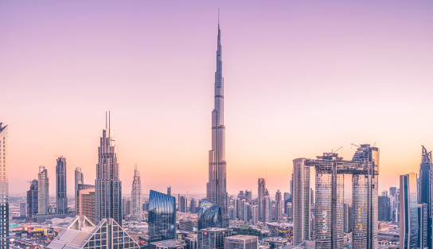

Бурдж Халифа, величественный символ современного Дубая и одновременно самое высокое здание в мире, привлекает тысячи туристов каждый день. Этот небоскреб, высота которого составляет захватывающие 828 метров, - это место, которое нельзя пропустить во время посещения ОАЭ. Что делает Бурдж Халифа настолько уникальным? Во-первых, его архитектурное великолепие и инженерные решения поражают воображение. Вы можете подняться на одну из обзорных площадок и наслаждаться фантастическими панорамами города. С заката солнца или ночной подсветкой Бурдж Халифа превращается в настоящее произведение искусства.
Пустыня Руб-аль-Хали - это место, где можно испытать истинное волшебство пустыни. Она известна своими огромными песчаными дюнами, которые кажутся бесконечными. Путешествие по этой пустыне - это невероятное приключение, которое оставит вас безмолвными. Опытные гиды могут предложить вам захватывающие сафари на дюнах, где вы покатаетесь на специально оборудованных внедорожниках. Вы также можете выбрать традиционный опыт и сесть на верблюда, чтобы исследовать эту потрясающую пустыню.
Лувр Абу-Даби - это сокровищница искусства и культуры, которая расположена на острове Саадият в столице ОАЭ. Этот уникальный музей был создан в сотрудничестве с французским Лувром и предлагает удивительную коллекцию произведений искусства. Посещение Лувра Абу-Даби - это погружение в историю и культуру многих стран. Здесь представлены произведения искусства от Да Винчи до Пикассо, а архитектурное оформление самого музея является произведением искусства.
Оставьте заботы о путешествии за нами. Откройте мир роскоши, культурного наследия и природной красоты этой удивительной страны.
Дубай Марина - это современная набережная, которая служит идеальным примером современной архитектуры и развлечений. Здесь вы найдете великолепные небоскребы, роскошные рестораны, кафе и магазины. Это также место, где можно отправиться на романтические круизы на яхте, наслаждаясь вечером на воде. Дубай Марина оживает ночью, становясь одним из центров ночной жизни Дубая.
Сафари в ОАЭ - это уникальная возможность встретиться с природой и местной фауной. Под руководством опытных гидов вы отправитесь в путешествие по пустыне или горным районам, где вы сможете увидеть орлов, антилоп и других животных. Также популярны сафари на верблюдах и ночные сафари с ночным наблюдением за звездами в пустыне. Это приключение позволит вам прикоснуться к дикой природе ОАЭ и создаст незабываемые впечатления.